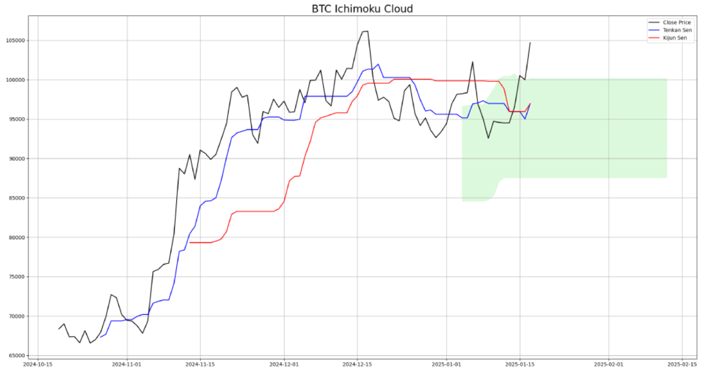

Ichimoku Cloud Analysis
The Ichimoku Cloud is a comprehensive technical analysis tool that provides insight into market trends, support/resistance levels, and momentum.
In this example, we analyze a cryptocurrency market using the Ichimoku Cloud. The green shaded area represents the cloud, which acts as dynamic support and resistance.
Key Components:
- Tenkan-sen (Blue): Indicates short-term trends (9-period average).
- Kijun-sen (Red): Indicates medium-term trends (26-period average).
- Cloud (Green): Highlights potential support and resistance zones.
Chart:
This chart shows how the Ichimoku Cloud can be used to identify potential entry and exit points based on price movements relative to the cloud and the Tenkan/Kijun lines.